[PowerBi] FIFA World Cup Statistics
PowerBi
Overall Page
The overall page displays basic information from all FIFA World Cups
Countries Participated: Keeps count of all countries that have participated.
Games Played: Keeps count of all games that have been played.
Histogram with Sum of Goals and Year: Keeps track of goals scored in each World Cup.
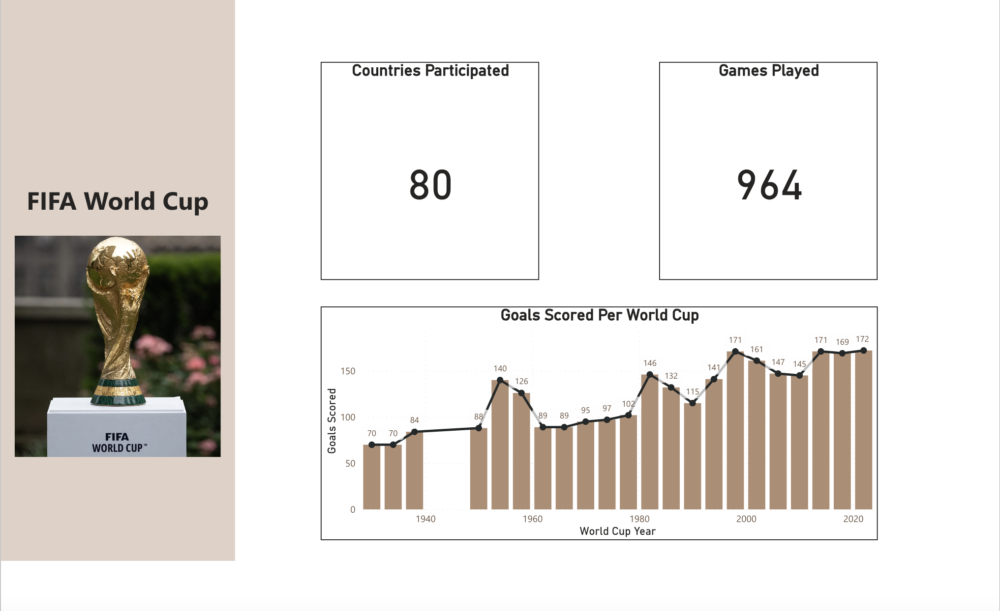
All teams page
This page allows you to select a country and display their Win/Draw/Loss rate and their Goals scored and Against.
Wins/Draws/Losses chart: This pie chart displays the total games won, drawn, and lost.
Goals scored/Goals against: This pie chart displays the goals scored and the goals received by each country.
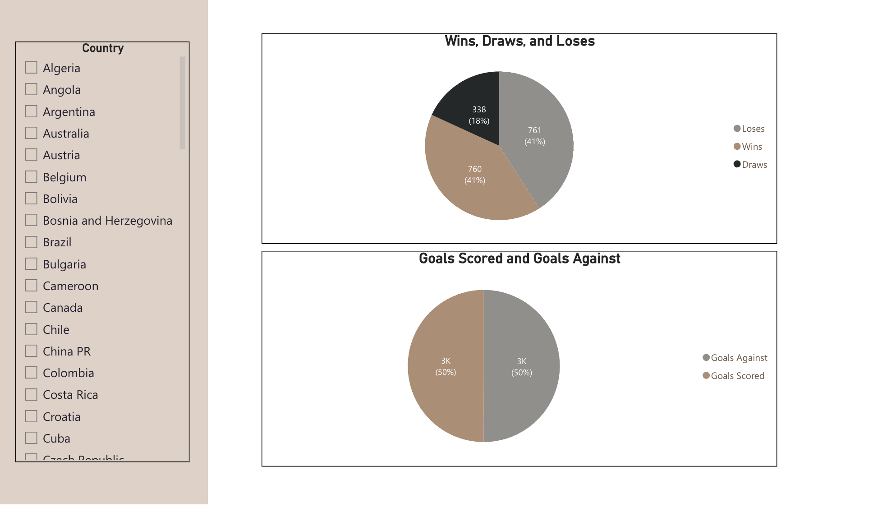
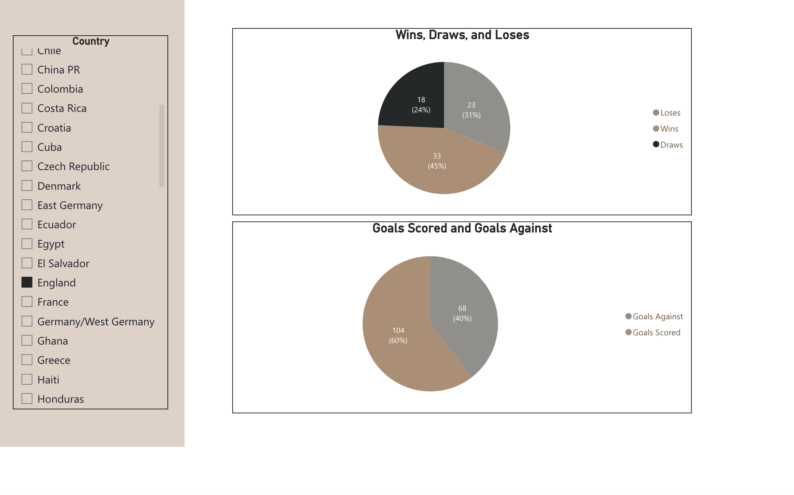
Year page
This page has a markdown bar that lets you select a World Cup year and presents information based on the year.
Host: Displays the respective years Banner and Golden Ball winner.
Information table: Displays the games, attendance, teams, and goals for that World Cup.
Match Schedule: Displays the match schedule for that World Cup, includes Date, Stage, Home team, Away team, and Winner.
Placement table: Table displaying the World Cup Winner of that year, second, and third place.
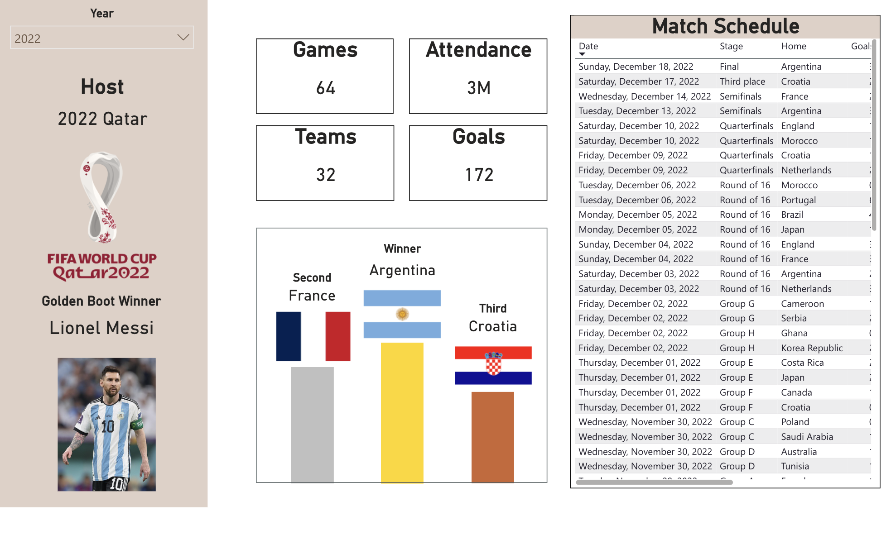
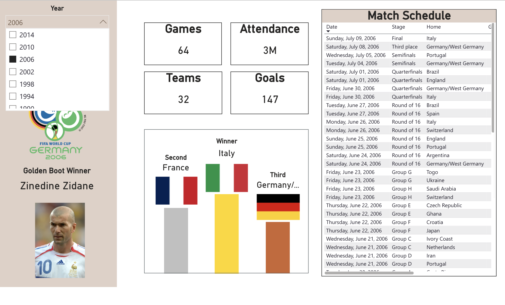
Winners page
Alike the All Teams page this displays information for only World Cup winners.
Winners table: Displays the World Cup winners and the year they won. If they have won multiple times it will list all the years that they have won.
Wins/Draws/Losses chart: This pie chart displays the total games won, drawn, and lost.
Goals scored/Goals against: This pie chart displays the goals scored and the goals received by each country.
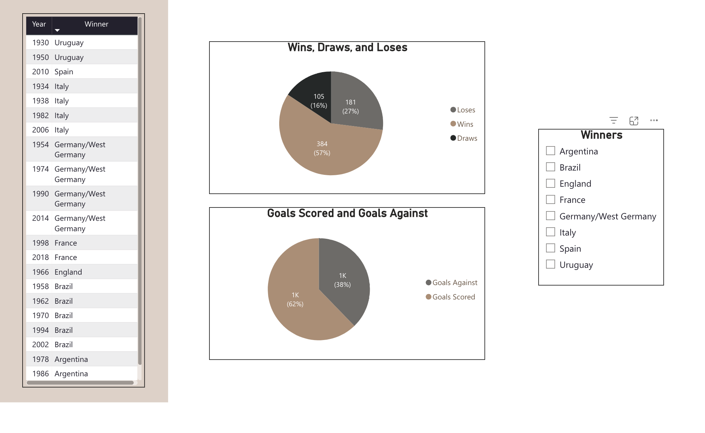
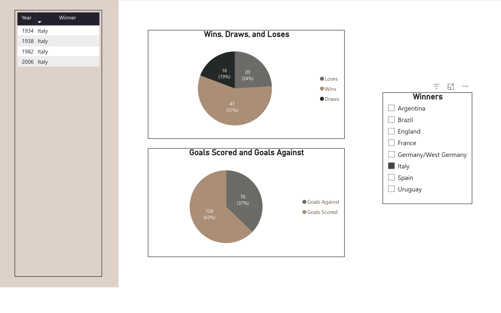
Excel
World Cup Matches
Keeps track of all World Cup matches that have taken place. Includes statistics like year, stage, teams, score, and many more.
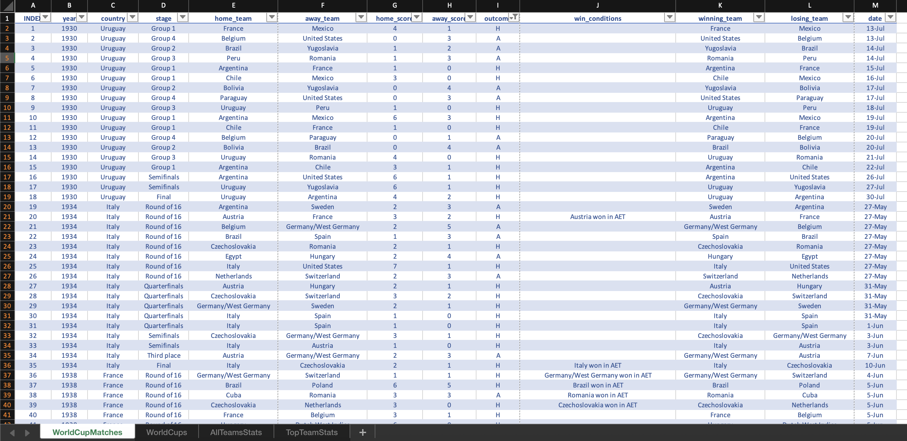
World Cups
This sheet keeps track of the year, host, World Cup winner, goals scored, attendance, and Golden Ball Winner.
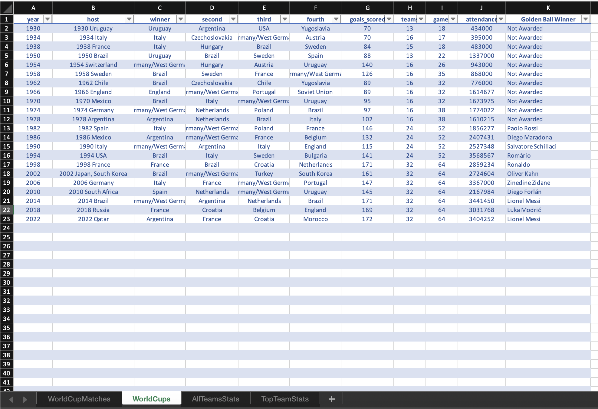
All Team Stats
The data in this sheet is meant to track every country who has participated statistics, this includes games played, wins, losses, draws, goals scored, and goals received.
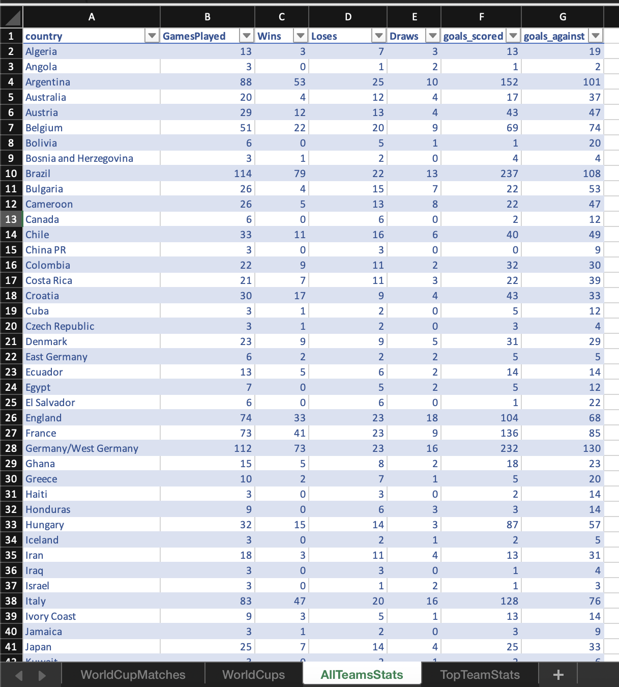
Top Team Stats
Here is the statistics for every World Cup Winner.
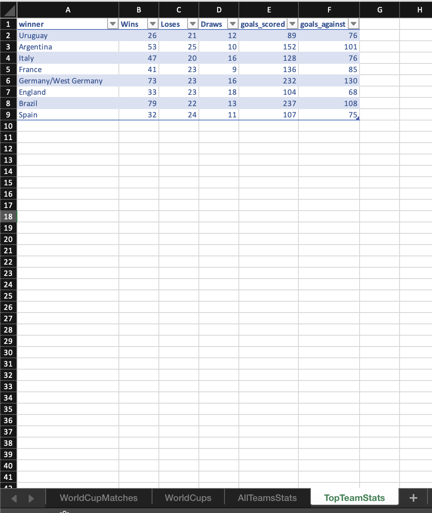
Top Team Images
Here I used this sheet to store the images for the first, second, and third place for every World Cup.
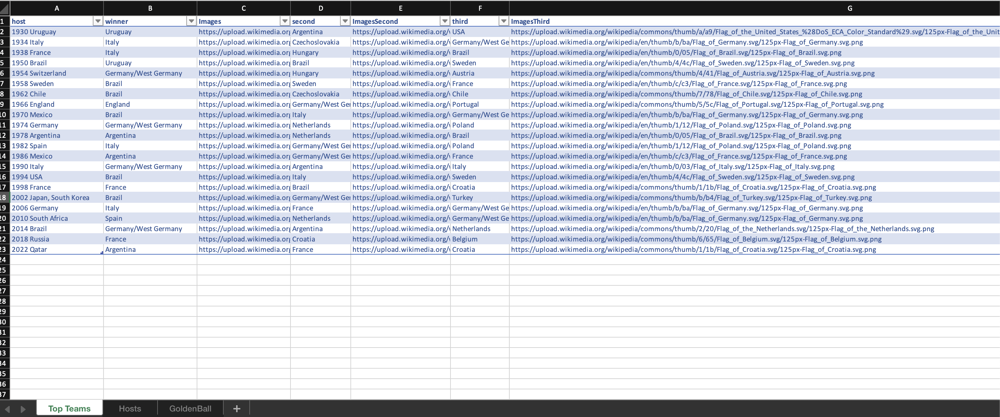
Hosts Images
This sheet is used to store the host poster for every World Cup.
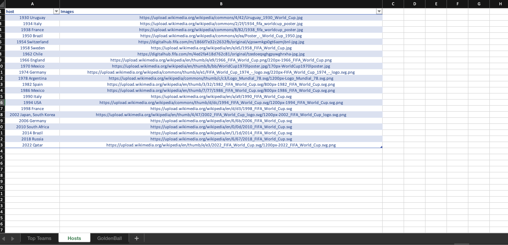
Golden Boot Winners
This sheet is used to store images of every Golden Ball Winner.
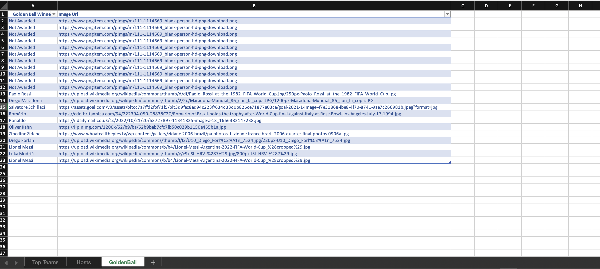